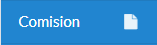
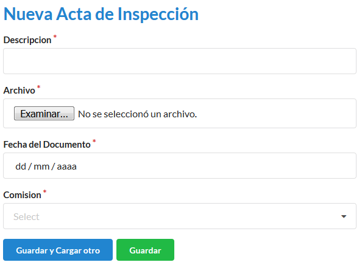
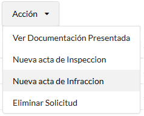
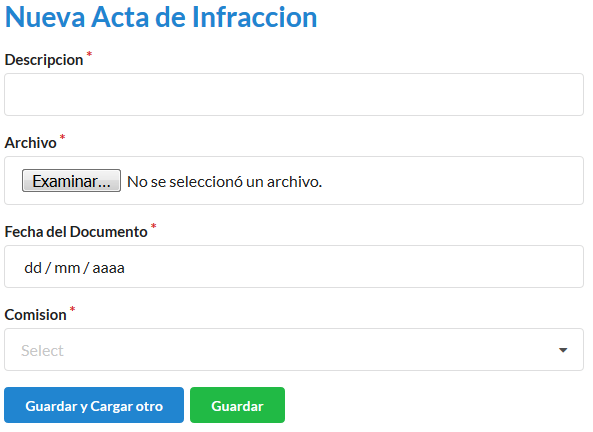

Comisión
Cómo crear una nueva comisión
Desde el panel principal, podremos ingresar a Comisión.
Para ingresar una nueva comisión, en la pantalla deberá completar los campos Empleados (para éste caso, aparecerá un desplegable con los empleados vigentes. Pueden tener mas de 1 empleado asignado), Localidades (para éste caso, aparecerá un desplegable con las localidades vigentes. Pueden tener más de 1 ciudad asignada), Fecha de inicio, Fecha de finalización. Los campos con * son obligatorios. Completados los campos se podrá Guardar o Guardar y Cargar otro.

Cómo crear una nueva acta de inspección
Las actas de inspección, son realizadas para cada permiso, en caso de que un establecimiento no este registrado, la comisión debe recaudar los datos necesarios para poder darlo de alta.
Buscamos la solicitud a la cual vamos a registrar la inspección, sobre el botón Acción. Nos dirigimos a Nueva acta de inspección

Para ingresar una nueva acta de inspección, en la pantalla deberá completar los campos Descripción, Archivo, Fecha del documento, Comisión (para éste caso, aparecerá un desplegable con las comisiones realizadas).
Cómo crear una nueva infracción
Las actas de infracción, son realizadas para cada permiso, en caso de que un establecimiento no este registrado, la comisión debe recaudar los datos necesarios para poder darlo de alta.
Buscamos la solicitud a la cual vamos a registrar la infracción, sobre el botón Acción. Nos dirigimos a Nueva acta de infracción
Para ingresar una nueva acta de infracción, en la pantalla deberá completar los campos Descripción, Archivo, Fecha del documento, Comisión (para éste caso, aparecerá un desplegable con las comisiones realizadas).
